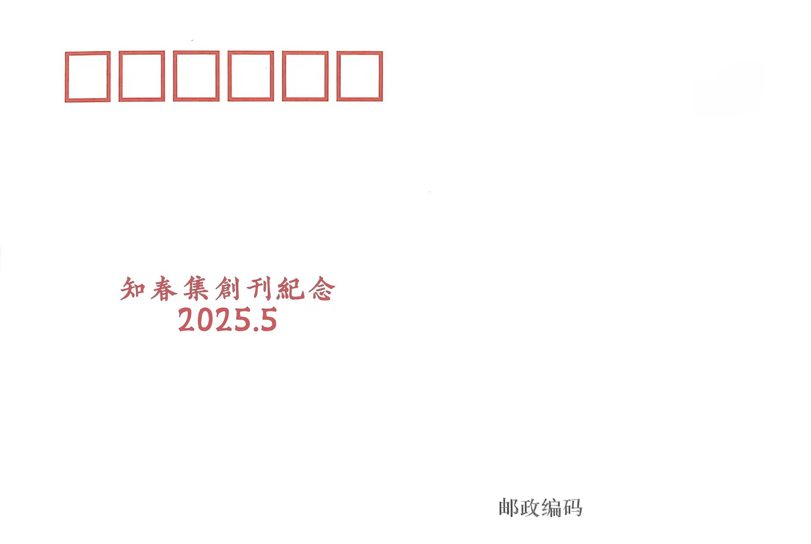

关于《知春》为什么?
我们成立于2025年1月20日，是一个充满活力的青年社团。那时候节气将至大寒，聊起“雪”后取了“静春”二字。因天气严寒，便偏偏说个“春”字——与其说“知寒”，不如说“知春”更亲切，更温暖，还带着几分童真的趣味，像是“幼儿园”这三个字给人的感觉。名字里藏着我们这一群人：在信息浪潮中成长的青年，既怀抱对未来的渴望，也愿意回望那灿烂悠远的文明，轻轻触碰它的余温、衔接起来融为一体。
写下春天的人
他们在寒意中种下字句，把小小的春意留在纸上。名字在这里，一如他们的故事，被悄悄珍藏。
翻开的时候
我们把这些轻声细语、一页页写下的念头，收进《知春集》。像把春天折叠起来，放进口袋里，等你想念的时候，就翻开看看。
知春集序·乙巳
共和七十六年，乙巳三月末，时经谷雨，岁属三春，南土夏虫已啼，北州红树初开。忆昔昨年，身伏燕山之麓，尤好凭窗更夜，再无聊赖，惟引景以裁诗。乃募天下才俊，结四海少年，得爱诗而存志者五十余子，藉数字之网，居菲诚之心，立社以论诗遣词，兼畅话闲情。时维冬末，万物酒醒，遂名知春。
夫诗者，感激兴发也，夫青年者，高歌走马，斗酒簪花，以蜉蝣量六宇之大，仗爝火明九夜之深，虽足言笑，然度其心力，识其胆志，非善感激而能兴发者也欤？今夫诗门旁落，道不相寻，风吟歌赋稀有承传，花月书酒可谓妄言，故老凤还鸣，前浪犹壮者，可以知之矣。呜呼！孰为未起之雏，而汹然之后浪者也？溯古接今，擎天一柱，寒山一玑者，中流之趣莫不成于黄口也。故诗道之遇，必在千万之知春与千万之青年。
今集知春社诸卿之语，无论优劣，不试高下，皆奉以随和之器，雠刊句读，列疏诗章，合为《知春集》，以发新雏之音以图明心志。今以为序。
二〇二五年四月二十六日
天义居士
又伊于谆之，燕人于氏诗清响泠然，放达空阔，多取势平易，化形绵邈，善藉燕赵之气以养风骨，洒脱而不冶，沉郁而不幽。《中京望远歌》歌行凛冽奇致，可谓自若也，所谓天风海雨之气，可以知也。
杨凌夜中独步
春草连乡路，烟霜上石阑。
日沉煎水暖，月醒照城寒。
飞鸟从来急，苍松独与看。
咸阳江尽处，凭吊有衣冠。
春夜于庭上
叶暖庭头树，天凉昨夜风。
玉台融素月，春水绕归鸿。
造化非身外，人间如梦中。
三山随我意，流转入西东。
风雨楼四月与诸君分韵得“花”字
四月风凉云似纱，前山春柳后山花。
欲随水转拾遗府，应与蝶寻黄姥家。
北麓闲亭飘绿草，西窗暮照暖寒茶。
雁郎休作人间客，何苦三更吹玉笳。
念奴娇
东园春涨，已多情红紫，柳烟千缕。池染平桥云染水，应是锦鱼游处。回首轩台，去年燕子，声绕来时路。望中须问：此情谁得相与？
犹记夜满亭楼，星儿摇落，化作关山土。北斗一瓢君莫饮，尽是明朝甘露。可道流年，新花旧墨，多少佳人句。一轮新月，几层燕赵风雨。
击梧桐·次韵无为先生兼作春吟
空谷流香，芳枝送水，早树呢喃新燕。小径通风，柳岸生云，只待东风吹散。谁曾泪洒人间，几重红绿，无关深浅。雪染梨霜，酒浸桃花，渐欲迷行人眼。
便许佳人，闲亭藤椅，漫笑胡笙吹远。更送目、青台绿瓦，此地江南谁辨？又有乡翁钓客，朝歌暮语不须怨。可相道：陈情旧梦，随波都一断。
中夜望远歌
古州风绿寒山紫，边家万里苍蒙地。紫皇遗我哈河水，赤峰吞之夜半化骐骥，摩足卷首喷青气。飚向云宫桂树寒，此中疑煮嫦妃泪，骐骥嗅尔行复醉。月照愁云冷如冰，犹似残烟蒸玄醴，三月白花从天坠。更卧烟沙席地睡，且休矣，乌兰哈达色如洗。老雁来归更憔悴，红山啼得天地沸。醒却高阁无限意。阁上好梦实无常，可道好梦向谁寄。嗟夫！人间知我二三子。
莺本斋
荆楚人莺本斋以词长，善化缠绵而剔秾绝，凝寒香而育温润，句落生趣，字里化悲，炼意含蓄婉转，可若凝露于纤毫，飞花和洞箫。观之《我与伊》有怅然深远之意，《醉太平》《南歌子》遒媚优柔，在得宋人之趣也。
我与伊
落红怀永素，参差酒添栀。
黄雀来临早，游人上踏迟。
水同轻鲤墨，停树玉从仪。
一夜秋风破，三江漫楚丝。
清平乐
琉光霜片，难教秋莺返。略抹清寒零碎剪，疏影悄迷酣眼。
瑶华且印空枝，连根犹自称痴。也怪屏风昨夜，轻嘲几缕青丝。
醉太平
愁衣露微，空寒结缡。竹汤云腻生霓，暂抛眉间疲。
斑鸠路歧，狸玄步稀。肩酥热耳依微，静鸟天阔飞。
南歌子
晚倦西风涩，时更北树开。
栖鹃啄羽弄桥斋，月滑渐流泛夜、冷层阶。
玉书道人
豫州赵生玉书之作，俊爽密丽，含蓄清练，郁勃而清冷，风逸而怀悲，《暗香》哀艳交织，《金陵怀古》荒寒劲骨，其文造境奇崛，有耆卿之怨，尽化碎碧深红之间。
金陵怀古
玉树蚀吴钩，星茫坠海楼。
燕矶呜咽雨，满意一空愁。
堕月残箫里，苔封鬼火留。
台城如碧柳，只管系春秋。
暗香
红深连国。有烟梢露萼，暗窥帘隙。剪雪团冰，素手移来太真色。休问石家旧事，空照眼、银釭遥夕。直怪得、一缕幽香，偷入楚云宅。
南陌。渐岑寂。怅绛雪易残，翠禽难觅。麝尘漫积。犹傍空枝舞寒碧。谁省孤山月下，曾倚醉、玉奴横笛。怕夜冷、春睡稳，数星自滴。
疏影
碎阴荐碧。恰半欹绣槛，微褪胭色。浅晕檀心，低亸云鬟，文君乍醒春力。鲛珠暗泫东风里，似怨鹤、空山无迹。漫记他、烛照红妆，涴却茜裙三尺。
犹忆华清睡稳，腻脂化泪冷，香雾凝湿。绣幄围鸾，宝靥销金，付与苔阶雨湿。残英莫扫吹笙路，怕碎剪、瑶台烟魄。待夜阑、重觅幽痕，数点春星自滴。
念奴娇
冷枫飐晚，正商音横笛，吹彻寒玉。万顷秋涛吞暝色，都作鱼龙幽哭。断戟沉沙，孤篷泻月，曾照飞花肃。江山文藻，一襟清露堪掬。
休问赤壁烟消，西泠鹤老，苔篆封残牍。自斫冰弦招楚魄，空外湘灵难续。雁柱苔侵，鸥波梦冷，倦谱霓裳曲。数峰青断，旧时渔火犹绿。
无为
全伊无为先生，又以孙正崇称，江苏盐城人。精于七律，少而善吟，其风沧桑深刻，隽永精妙，得势同光之体，陈排腾掷之句，琢一家之风骨。其唱和之作哀怨而刚劲，悲冽而挺直，可谓青铜淬火，寒烟凝碧，能合法度与精魂为一。
盐城
薄天蓝釉属盐城，剑戟如楼王气生。
顾眄江波归海郡，驰驱奔浪贯长鲸。
鹅笙沸日狂街市，玉笛吹风起媚情。
万族悲欢今又复，曾经后羿是尧兄。
步散星《送友人海外求学》韵并和之
南浦灞桥江令终。阳关一曲送西东。
昔年逃窜民风异。此日悲欢麋鹿同。
三黜元非毫末迹。再生能感扇前风。
求朋海外今归去。尘未登衣又转蓬。
酬虚斋杨宗卿一首
举宗高意能文雅，击鼓渔阳狂世才。
玉璞羞悲窥海市，芳葩非梦笑金台。
供吟山月和江蕊，寄宿风云与北莱。
吴越从来多逸客，荆人白雪动梁埃。
选题停云杯其二
华堂暮醉长安笑，折槛空悲抱玉圭。
负鼎犹能心不恐，洗兵何益气将迷。
琼池饲养食苹鹿，烛路恩施木石儿。
曾认衣袍寒露色，东篱终寄醉如泥。
次于谆之《咏史》韵
青史无言岂是真？青蘋花雨一萧森。
九皋悲鹤华亭草，两地啼猿蜀客心。
不是游魂直片玉，从来骸骨比双金。
谁将古迹苔深扫，燕马回蹄泣故人。
击梧桐
云沁凉春，河桥对碧，唤出林间飞燕。雪上梨花，梦醒江波，楚梦空凝难散。机心欲堕河鸥，但醉清恨，蓝烟吹浅。黯彩飘零，艳影凌波，畔柳微青迷眼。
褪腻兰风，招香桃影，泪露生烟吹远。倦玉草，随人问讯，消息盟寒应辨。欲与梧桐旧侣，重游画扇岂幽怨？独憔悴，衣襟自冷，江流愁自断。
宴清都·风雨楼四月分韵得鸟韵
烟雨清明渺。愁云起，迷蝶荒梦空杳。腥飞芽蕊，叶生孤枝，原来春晓。江湖不带扁舟，五湖约，巫山洛沼。吴馆处藤碧凄凉，夫差但恨欢少。
横亭北望风波，风波何急，云堕雾蹈。江头翠气，城头王气，梦魂轻扫。我为畔上渔翁，欲钓起蓬莱仙岛。洗憔悴一眼春风，何时懊恼。
失堂
失堂，居沪上，以五律长，哲思聪敏。其诗若冰绡裹铁，艳骸泣露，掩峭硬于阴婉，藏诮讽于典籍，能反俗以入道，居纷纭而不改其志也，深得岛瘦郊寒之精，是故其音声之凄丽哀绝，实动人肺腑。
无意工词赋
无意工词赋，有心描饰妆。
兰风肥蝶梦，幽思瘦黄粱。
避汝丝柔目，交杯酒断肠。
乱弦脂粉色，怎奏凤求凰。
感讽
圆魄引波涛，人间轻似毛。
潘安亡诔悼，宋玉苦魂招。
高冠雨鞭重，瘦骨风斧凿。
自得渔父隐，何必作离骚。
失眠
诸圣无开眼，人间多断肠。
木轻皆化泥，雨重尽沉湘。
尘点积厚垢，露华凝滞霜。
五言连晓作，一半是心伤。
弃妇
弃妇浊如泥，拊心厌谨贞。
潮随有机巧，芳撷忘中情。
昨夜吟多细，今朝酒尽倾。
空闺频洒扫，只待唤伊名。
风落鸟啄木
风落鸟啄木，抬眸尽紫红。
足压芳郁郁，云动日融融。
天远有大气，泥深栖小虫。
惜无君目盼，诗与苦吟同。
蝶恋花
一念纷纷无定止。琴瑟相招，纱破缠纤指。彤管含芳知久俟。煮娇耳莫踌躇跱。
酣酒酥温难解衣。彩凤翩翩，半醉龙吟细。香汗氤氲蒸蜜泪。登徒欲饮金茎坠。
程岑
蜀中人程岑，诗格恢宏，善藏锦绣于江山之中，喟凡生而显其壮志，故能高亢激越，兼得章法；感怀伤时，不失其度。观《九天山月歌》，正所谓驭气如虹，摄月成璧也。
初春思
冬远鸟不鸣，虬枝尽狰狞。
风来花未至，雪去盼新晴。
心念海棠语，肠盈思若情。
春寒多夜雨，几度到天明。
乙巳新春有寄
爆竹声声辞旧章，红灯初上换新裳。
千山瑞雪连千里，万树梨花带万妆。
明月生辉人异处，红梅遥指是吾乡。
莫言岁末多霜雪，且待春风绣海棠。
怀古
秦据崤函君作臣，汉平猃狁惧为邻。
戍夫一炬天下笑，奸佞争雄任外亲。
应笑始皇求灵药，可怜宣室问鬼神。
王侯将相古今事，家国兴亡在立身。
九天山月歌
九天山溪九天流，秋池轻漾半轮秋。
悬泉击石空谷响，孤枝啼月几时休？
青山远黛眉眼处，月拢纱雾扰人愁。
月照云漫山浴海，恍若彤云泛绿舟。
素晖萦心愁攀挛，揽月徒恨无宿缘。
但斟清酒酹明月，莫叹路遥嗟道险。
赤诚不畏前途远，千里江山一月牵。
惟撷春风送秦云，嘉陵江月共九天！
少璞
少璞，新疆乌鲁木齐人氏，文字萧索深切，风格悠远空廓，能造境于繁冗之内，放眼于经纬之外，不慕放达，但歌其心，峭寒抑郁，愁绪淳实，哀转凄凉。观《唁真武行宫》，凄厉之色，实咏史怀古之佳唱者也。
唁真武行宫
白沙惜古道，回雪恋汀洲。
日薄西山下，芦弦慨又收。
朱楼无限恨，碎瓦半片愁。
凭吊奢延水，烟涛漫自流。
苏幕遮
爆竿声，霓彩吵。长市行人，人说团圆少。 天水还寒霜草晓。冰魄无言，镜碎鱼龙咬。
旧欢欣，长别恼。路过潼关，千里相思渺。虚设良辰风景好。独我愁肠，化作依依鸟。
芭蕉雨
败絮斜飞春后。戚寒遮望眼、山眉覆。篆缕懒熏章绣。怎奈湿滑寂漻，黄昏似旧。
谁听声断更漏。残夜漫消受。铅月影纠纷、参差瘦。未殢整、问云窗，挨过一宿怜殇，愁煎在否？
祝英台近
九天空，冰魄润，回雪又飞晚。素月纠纷，千里小妆浅。可堪初问时光，茫茫陈雾，却移去、层楼望眼。
漫斟展。曾道琴律难听，难听今也远。不胜寒衣，还说旧裳短。谙尝粲枕清斜，弄拨薰篆，总留给、个人消遣。
金风信云
金风信云，居江西南昌，其人词骨嶙峋，炼字如铸鼎，海览百家之箴言，讥刺腐儒之词道，心思深重悲切，诗风朴实瘦削，多见老杜之境也。《贺新郎》如浴西风，如浸寒泉，其冷清可见矣。
贺新郎·风雨楼分“有”韵
此恨年年有。更何堪，满江金絮，一堤青柳。且向华筵还诗债，莫向花间击缶。当酹尽，清杯浊酒。鸥鹭欲招呼不应，但声声杜宇催人瘦。南北事，苦翻覆。
飘零词客多蝇狗。况春残，喧嚣磨折，惘然奔走。有约山林休待老，无路侬心渐锈。谁记得，乾坤某某。惟祝平安生到死，向清波万里新如旧。对落日，湿襟袖。
减字木兰花
青郊行遍，不得去年桃李见。极目云根,有雁难传别后魂。旗亭闲宿，醉看水天常渌渌。暗里乌啼,一夜春风客泪稀。
高子琅
辽地高子琅，多作抒怀伤事之歌，取魂于古，故能熔史铸谏、泣血成珠，歌排慷慨顿挫，血气勃发，所出感国、伤春、怀人、悲己者，盖佳调也。
清明拜高桥烈士墓有记
忍见神州龙帜倾？今时何处置遗缨。
半泓残剑千秋意，一脉长阶万血擎。
暂撰霜毫英魄塑，且聆丹卷后人晟。
应知此去赴征路，须待明朝更展旌。
清商怨·吊周培公
寒朝浓露惊栖鹄，庭下烟絮簇。满卷清徽，竟难归磬竹。
良夜好天堪宿？独怜君，珠玑遗腹。也恨冰心，徒留高阁束。
久别再遇嘉琳
暗恨共君离日久，今朝一见更心繁。
花疏云淡风虽冷，弦瘦音稀情竟温。
箴语灼言衔朗玉，清神悯性谢曾痕。
天若绝子谁同我，问尽人间不解魂。
春夜见雪
徊雁懒衔云外声，北风夜半弄秦筝。
浮生应许留音瘦，空待春深又几更。
汉心长昭
天衡已窃朔方间，金瓯未还神州沦。
人去朱丝更去身，雁归寒石不归人。
幼麒临孤盟旧誓，子蛟生里续清魂。
坟茕立孑三千丈，肝胆卧尽几昆仑。
朝奏蜀歌闻魏地，吴蒿声侬俱销痕。
一晋功成兼三庙，空有后人悼汉臣。
子平
子平，湘人也，好东坡文章，寄情山水，诗心恬淡自如，悠然惬意，以摩诘之禅帚，扫义山之风韵，似于古锈斑驳中见桃红柳绿者也。《醉花阴》组词温润清爽，恰得子瞻之雅趣矣。
忆三月一日行
无意寻幽径，荒宅倚木扉。
泉枯深草漫，瓮底古音稀。
落日留残瓦，影斜渡院围。
而今尘世里，只是补春衣。
点绛唇·忆中学
春带愁来，故园桃蕊应开了。缀绿工巧，弄粉蝴蝶绕。
捻草结绳，反复归期渺。莺啼早，莫将春恼，先把尘浮扫。
醉花阴·月假早醒遍寻日出而作（其一）
早醒觉来柔鬓坠，寂静人无寐。闲倚看天空，黛色重帷，难有朝阳美。
出门不管风云晦，雾幔凝成泪。油菜满田畴，穿过回头，一地摧花罪。
醉花阴·月假早醒遍寻日出而作（其二）
极浦轻寒牵雾幔，田野铺绸缎。油菜垄边寻，何处烟波，却惹黄花瓣。
春情如此留人看，嘱咐莺来唤。回去倚阑干，翻覆人情，辗转听不惯。
醉花阴·月假早醒遍寻日出而作（其三）
阶吐深苔贪玉桂，总被人群累。闲语寺中翁，惊讶诗情，山水清音贵。
烂柯言笑陪童戏，忘记晨钟未。天际渡红痕，击鼓波涛，更在山门外。
何梦溪
何梦溪，宁夏银川人氏也，长于抒怀伤事，能融当代之言语于古律之歌行，以古体衬今心，其风悠柔清淡，其境婉转新颖，温润如流。夫《黄昏》《蝶恋花》之作，皆有创新，以当代之意象熔意，是妙趣也。
黄昏
黄昏独对雨丝丝，风透单衣冷暖时。
曾共小楼花下望，也吟寒夜梦中诗。
回眸已足教肠断，举袂如何不泪垂。
所有相逢之故事，难逃结局是分离。
蝶恋花
山海相隔空对忆。万里霜天，落叶飞鸣急。手握荧屏心颤栗。时光水里沉消息。
点检曾经如过翼。一点清光，转向愁中白。独立小楼情脉脉。泪落双睫衣衿湿。
谷旻灵
成都人谷旻灵，又名谷禹，其风华美高亢，线描风骨，句列间沧然雄浑，缩龙成寸，托萧寒之气以衬赤心，绝律厚重悲怆，古体铺排激荡，可见胆气超凡。《冬兴》组诗气色逶迤，《杂兴》动如雷霆。
冬兴（其一）
覃风淡雨爱花容，朔雪残声冷暖冬。
云锁神龙关暮鼓，烟封白鹤戴晨钟。
旄倪煴火瀛洲客，妇女欢歌阆苑浓。
捕彘捉鸡迎旦日，舞歌高阙晚山松。
冬兴（其三）
疏影暗香藏赤乌，空庐陋巷败冰壶。
兔毫蠹简道贤圣，坟典囊橐汉相如。
莫谓青衿年少妄，诗篇灼烈布宏图。
莺歌燕舞传君久，尔诩荒泽仍待锄。
冬兴（其五）
十丈冰霜更冻僵，万遥俜影眷莲棠。
月藏幽夜空阡陌，星点倏风乱寸肠。
踏雪寻梅知有路，庄生醒梦恨无香。
山川鱼雁绝沧海，不念则息落楚江。
冬兴（其六）
冷雨寒江照晚犀，华灯夜月引横笛。
昔别花落赊归处，今日君还送此期。
娉舞扬眉霜释雪，婀娜乐曲水丹衣。
千杯琼露无须顾，百斗珍珠瑟筑疾。
胡诌·记雨后初霁
暂赊春景词半阙，无限底事黄粱中。
我见深云青岫处，绿孵殷红渲东风。
杂兴
芝兰纫佩饰，鸷鸟不与群。
端心正绳墨，暗室不欺魂。
椒宫伶官豫，蜗角冰心存。
远山危岌岌，寒鸦栖墟村。
悠悠起仙音，宕胸邈微云。
鹿麂饮草露，飞鸟歌晨暾。
罢吟《何满子》，笃志立乾坤。
新朝正烨煜，旧日已黄昏。
白昼
白昼，河南濮阳人氏，好古体，不制于格律，故文风自然清朗，迤逦动人。观《东廊日出》与《落花》者，悉柔美悠闲之甚者也。
七古·东廊日出
日攀云起染东廊，人踏金粼斜影长。
春风好客牵翠柳，折叶作舟泊明窗。
七古·落花
一夜风来一庭花，落红殷情饰景华。
伏轩偏爱春更浓，幽香满园浸窗纱。
孩提急争编篮去，逸女闲拾鬓间插。
春日曾别今又来，锦铺院中请花茶。
则好
则好，居福建泉州，其人博览群籍，诗风深邃凝重，多能以身所思，发感人生天地万物之问也，故刚劲于悲戚之心，放荡于尘寰之色。
杂感
阖目虚世界，忘言迷假真。
苍茫何逆旅？混沌托吾身。
徊绕蝴蝶梦，濯缨沧海滨。
此宵终幻灭，亘古独精神。
桔子
桔子，鲁地人也，行文晓畅明白，真挚豪迈，观夫宇宙之盛，虽渺小如蝼蚁，尚有慷慨雄厚之歌，暧昧旷达之情，亦柔亦直，亦浓亦隔，真妙手也。
地球仪（其一）
一盏乾坤谁掌中，九天之下岳渊同。
撩开三万六千夜，缘爱枢声闲转空。
地球仪（其二）
飞廉竟有烛龙功，搬弄晨昏似转蓬。
晚照不输新曙色，时穷只为欠东风。
傍晚看海
霜天碧海两无涯，翠浪生开蓝印花。
晚照欲销精卫恨，尽皴飞雪作黄沙。
摛翰
摛翰，渝州人氏，工于词作，其送别之作，俱真情依依，色彩优柔。至于琢句，则含蓄凝练，简易厚重，能以寻常文字发不寻常之感思，飞雪片玉，春草秋霜，皆慨然真挚，概得乐天、醉翁之精神也。《八声甘州·铜马》情思浓郁，可谓绝伦。
山上喜春聊寄冉二君
尺素染新笺，相知愈二年。
春风多喜雨，水色好连天。
但识长门赋，希闻未绝弦。
山高如更上？鸾驾斗牛间。
做客醉中有感
行酒故人家，扫庭煎醒茶。
春风应是客，一夜万千花。
行香子·絮
堆雪云轻，碎玉无鸣。飞绒过、惹乱娇莺。千丝万缕，徒系风情。是晓春后，仲春里，晚春行。
芳尘委去，回首秋生。凝愁阻、何处归程。芭蕉覆梦，小阁拦声。总故乡远，近乡怯，在乡城。
浣溪沙
斗转阳回姑射冬。寒山失翠故园东。飞蓬一径灞桥风。
前夜飞鸿倾目送，近乡倦客敛愁容。小楼红袖枕春浓。
浣溪沙
落雪曾经梅谢红。故园归鹤白云中。人间岁晚怎相逢？
青冢空留残月在，不堪惜别苦吟风。寒声渐入晓春浓。
江城子·赋别
寒山凝翠雪盈楼，满轻舟，古桥头。飞絮无声、风乱楚天收。云卷杏帘犹在望，阳关后，欲浇愁。
煮炉推盏待冬流，忆春秋，更何求？酒上三分、击箸唱休休。醉问梨花归梦处，卿不语，过渝州。
八声甘州·铜马
序言：甲辰冬末，闲翻旧匣，偶得儿时铜马，锈影斑驳，尽覆尘灰。作词以寄思。
忆当年鼓角动边陲，风起洛阳台。正金戈万里，冰河一梦，剑碎残盔。犹报关山几度，誓按玉龙回。暂罢琵琶曲，倏尔相催。
伏念狼烟行路，踏秋声飒飒，红败黄腓。泣燕然将老，无计狩冬归。叹而今、华轩空锁，剩阁中、冷月照帘帷。还听取、雁鸣征塞，身锈尘灰。
苏沐影
苏卿诗风曲回委婉，有义山才气，长于律，其作每慨人世寡薄、真情虚幻，可见深重悲凉，酥寒如梦，夜半读之尤怆然落寞也。其《无题》组诗，步韵李氏，更习其魂，可谓妙手。
无题·次义山韵兼寄友人（其一）
残梦醒来无迹踪，高楼团月五更钟。
身因无信堪销灭，愁为魂牵却渐浓。
独放花枝空曳绪，孤飞只燕岂从容。
刘郎老病蓬山远，梦里蓬山几万重。
无题·次义山韵兼寄友人（其二）
梦里蓬山又几重，伤心破碎怎堪缝。
有情韩寿香偷得，多病刘郎信不通。
楼外沉云昏月冷，灯前阁笔湿笺红。
浮生最厌漂泊世，西北何时来好风？
无题·次义山韵兼寄友人（其三）
西北何时有好风，携来消息过堂东。
识途青鸟难寻得，传信鲤鱼逆不通。
梦醒恍惚君影远，醉前无奈酒灯红。
谁人今夜频看镜，可笑孤身已作蓬。
无题·次义山韵兼寄友人（其四）
自是重逢已作难，春来无奈冷梅残。
楼前独燕依枯树，镜里孤身囚楚冠。
刘阮归来空若此，巫山一梦渺如烟。
何时云中得青鸟，为我殷勤去探看。
无题·次义山韵兼寄友人（其五）
夜雨猖狂打小舟，将行繁复事难休。
诗心因病堪消减，愁绪无端怎殢留。
早料巫山非此梦，岂知世上已三秋。
鸾筝频听终不见，何处人间著白头。
子远
浙江人子远，观其作忧愤铿然，词风如孤鸿唳霜，诗格似老蛟蜕甲，古艳中有兵戈之气，上可观来去之旷然，下能品花草之丰丽，《长相思》回环婉转，《水龙吟》深邃冷峭，悲痛喟息可观之矣。
长相思
梦三番，醒三番。梦里幽芳梦外寒。屏深露月残。
风连山，雨连山。半醉求得一夜安。蜡息余泪干。
水龙吟·北齐
暮云烟尽残阳透，空破纷飞胡镞。血歌玉璧，河桥兵峪，小关骨肉。夜雨春秋，几番宫变，几声嘶吼。月明水东流，木深草暗，斛律恨、兰陵柩。
欲问晋阳谁守？望宫栏、箫笙依旧。亘古狂沙，更凋流蕊，何堪虚陋。旷野西风，青裙难舞，忠心难就。越汾河泗水，太行山外，败营昏垢。
菩萨蛮·秋梦
浪横水破苍穹隐，推澜携棹轻舟近。回首落花津，浮波溜碎银。
远山云缀少，山堕忽生晓。青雨点秋灯，空窗露恁凝？
李岚霏
李岚霏，广西人，其风颇有五代之色，言辞深邃奇崛，晦暗古朴，若素缟裹剑，冰魄生花，暗藏锋锐，善托离人之悲抒己心智。《欲禁卿》一诗忧愤而典然。
欲禁卿
江月纠晻暧，两云睽阕夫。
霜吹偶惆惋，清泪守奸污。
卬欲禁卿内，卬由禁女躯。
冥冥还一世，昭昭笑然呜。
雪明鳷鹊夜·白白声声哑
白雪绵连处，白帘微滟滟，白苦形性。白梅冱韵哀，白月光静。白白花儿飘落鱼，白面娇、却伊湿冷。白床垂、垂泪尤其，其离我懭。
懭难生且不得，得空不得心，泣嘁咽景。景灰灰、月抚身中怲。泣哑喉枯枕苦、红目望怜、被中凊凊。愿皆空了去，揪心绞命。
于唐樾
于唐樾，黑龙江人氏也，成于歌行，其文灵活多变，自然奔放，其情意质朴，词句幽丽，景调苍茫，藏节于乐府之内，化志于春风之中。观其《北地春游引》，略有黛玉葬花之遗风也。
北地春游引
淡淡疏疏毛草青，东山枯木浸湿苔。卧野金峰小玉丘，三零四点酒雨落月勾。谷底流带河，两堤生雏柳。云中百鸟忽朝凤飞度，山间九阴吹息黄枝活。江载叶舟蓬山去，雾幕疾风路难求。冷袖催人忧。
沿户谁家植西府，三季花开三日又花落。俄顷天边飞暖雪，月华凝冰同星辉碎破。丁香伐煮酒，此物之美在极乐。江中尽落红，风波荡漾似唱和。集芳草投火，香风过境千里去余冬。鸡鸣晓日又东升，霞光映得欢笑桃花红。
北疆小春如蜉蝣，朝高飞去夕当死。何不乘景共畅饮，纵歌舞。且沐晨光起，暂不论尘羁。白桦细枝嬉钟鼓，清风穿崖胜丝竹。花落榻，愿孤葬山岭，野鬼仲春伴树栖。梨白淹碑石，才肯长安息。
关于·知春集纸质版·乙巳
总主编：天义居士
本册主编：天义居士、书生希霁
编写人员：天义居士、莺本斋、玉书道人、无为先生、失堂、程岑、少璞、金风信云、高子琅、子平、何梦溪、谷旻灵、白昼、则好、桔子、摛翰、苏沐影、子远、李岚霏、于唐樾
责任编辑： 广州穸阑科技有限公司
美术编辑： 广州穸阑科技有限公司
视觉设计： 知春社
关于·知春集·邮刊·乙巳
设计人员：程岑

☰